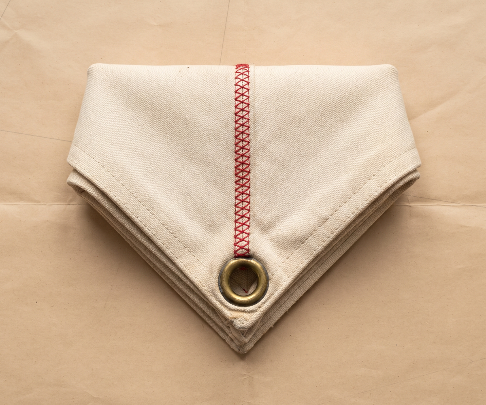
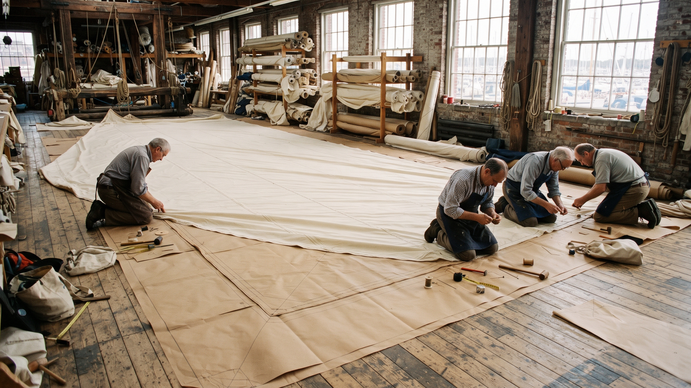
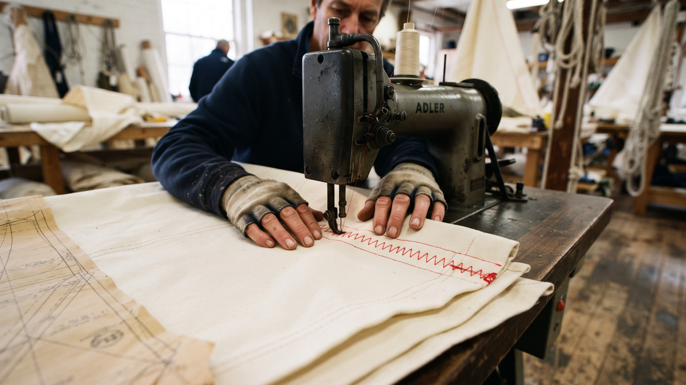

The Sail Loft. A command line generator that renders a platform specific hardening script from a YAML configuration file through a Jinja2 template. The loft cuts and sews the working sail from the pattern laid under the canvas, and the pattern is the customer's own: no template and no compliance policy ships with the tool.

python3 main.py --compliance-standard CIS --config-file config.yaml --output-file hardening.sh --platform linux
| Option | What it does |
|---|---|
-c, --compliance-standard | The compliance standard, for example CIS. Required. It is a path segment in the template lookup, nothing more. |
-f, --config-file | The path to the YAML configuration file. Required. |
-o, --output-file | The path to the output script file. Required. |
-p, --platform | The target platform, for example linux or windows. Required. Also a path segment in the template lookup. |
-h | Show help message and exit. |
